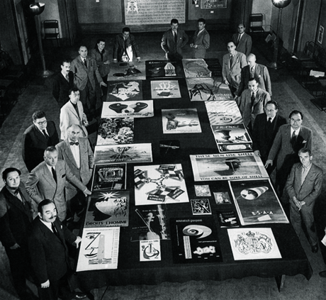
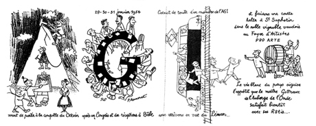
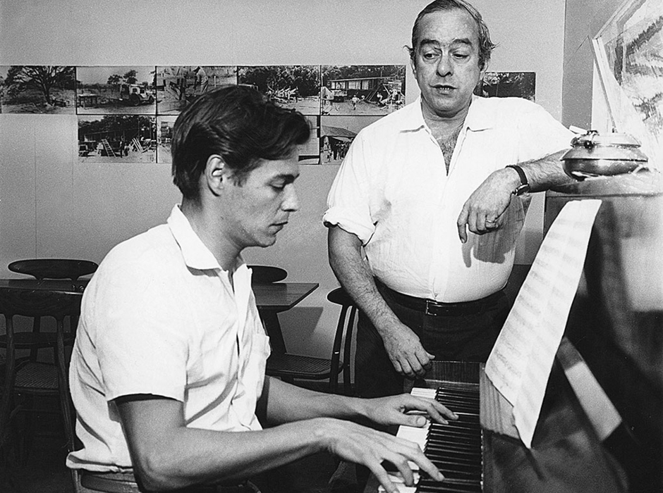

2016 : Seoul
In DDP by PaTI
Membership : Sang Soo Ahn
What Is A.G.I?
Inwards
The AGI unites the world's leading graphics designers and artists in a professional club of common interest and achievement. It is an élite club. Its members have been collectively responsible for the identity design of most of the world's top corporations and institutions as well as for countless examples of globally known packaging, publications, illustration and posters. The AGI provides for friendship, mutual respect and the enjoyment of the company of the like-minded - even reassurance in the face of a sceptical world. Ideas and experiences are exchanged informally at periodic meetings and by letter, email and fax. All members may also attend the AGI Congress, which involves a more formal business and social agenda. A different country hosts the Congress each year and presents its own history, members' work and professional achievements in art, commerce and education.
Outwards
The role and importance of the AGI within the professional field of graphic design is clearly different from the existing national and international professional organisations. In recognition of this context, the AGI is also a platform for activity. It has a task to tell the world and change it. Through the relationships and interaction of its members, the AGI promotes graphic design in lectures, education and publishing. It encourages knowledge and understanding among the young and fosters contacts with other institutions, organisations and companies involved in graphic design.
The AGI holds exhibitions of members work which are highly influential in disseminating new forms, techniques and ideas. There is a book publishing programme based on the thoughts and works of members. There are contacts with colleges and schools, government bodies and commercial institutes, all aimed at promoting graphic design and visual literacy.
Backwards
In the 1940s, commercial artists, mural makers, typographers, printmakers, art directors, illustrators and poster designers increasingly realised their common bonds, and the modern profession of graphic design began to be defined. In 1951, five graphic artists - two Swiss and three French - decided to formalise their relationship into some sort of association. Their idea was simply to share common interests and friendships across national and cultural borders.
It was a notion that soon attracted leading exponents of the graphic arts from elsewhere in Europe and in the USA. In 1952 the Alliance Graphique Internationale was incorporated in Paris with 65 members from 10 countries. The first AGI exhibition was held in Paris in 1955 and in 1969 the headquarters moved from Paris to Zurich. Student seminars were introduced in 1979 and the first Young Professional AGI Congress was held in London in 1994.
Forwards
An explosion of global communications is changing the world. Powered by media like television and the internet, a common visual language is forming as symbols and images become the world's universal vernacular. The original members of the AGI were responsible for creating many elements of this new language. As the world turns, their successors - exponents of the traditional and the new media - are becoming members of the AGI themselves. Today there are around 370 from Africa, America, Australia, Asia, the Middle East and Europe - 32 countries in all.
Membership of the AGI requires reputation and achievement of the highest order and commitment to the processes of visual learning and perception, unfettered by cultural differences. The AGI remains dedicated to the universal aspect of graphic design as a means of communication and information, and its ideals remain relevant to the new world of visual literacy which its members have helped to bring about.
1952 : London
×

1952: London AGI Assembly. The Founding Fathers and the Invited New Members at their first Assembly. Beckman, Nathan Garamond, Him, Lewitt, Gauchat, Jean Colin, Mrs Garamond, Monnerat. Bühler, Erni, Brun, Heiri Steiner, Havinden, Picard Le Doux, Schleger, Herdeg, Keely.The founders and a number of ‘new members’ met again in London (1952), Paris (1953) and Basel/Zermatt (1954). In Basel they celebrated the very special local carnival, after which they travelled to Zermatt to enjoy a wonderful time in the mountains. This must have been the very start of a long AGI tradition: a General Assembly, a Congress and an interesting venue in which to enjoy them. In Zermatt a special committee was appointed to prepare and organize the first AGI Exhibition, held at the Louvre in 1955. Jean Carlu took over the presidency of AGI and was also in charge of the Paris exhibition.
>
1954 : Basel
×

1954: Basel/Zermatt, AGI Assembly
‘Art et Publicité dans le Monde’ was the title of that first AGI exhibition in the Musée des Arts Décoratifs on Rue de Rivoli. 74 designers from eleven countries took part, putting AGI on the world map. Numerous ministers and ambassadors from members’ countries attended the event. As was typical of the period, the poster was the dominating medium. Issue 58A of Walter Herdeg’s Graphis recorded the exhibition in detail. In addition to the members’ personal works, there were displays of work by AGI members for leading design-conscious companies such as Olivetti, Ciba and Larousse. Also in 1955, the Swedish designer Anders Beckman organized an AGI poster exhibition in the pavilions of the important design and industry show H55 in Helsingborg. Beckman created a city-wide corporate design programme for the occasion, in fact the first ever of its kind.
<
>
1959 : The Belgian Coast
×

The 1959 Knokke AGI assembly, on the Belgian coast, was a kind of philosophical turning point. Jacques Richez was the host for 20 members. In addition to a day tour to the old town of Bruges, it was a meeting with serious discussion of major professional, social and ethical issues. This time it was not only the work itself that was in the limelight; in Knokke, AGI talked about the men behind the work. Jacques and Heiri Steiner made themselves heard, as they would continue to do throughout their many years in AGI. Heiri had produced a paper on ‘The moral mission of AGI’. The Alliance should, in his words, tackle its true task of acting as a trustee of our profession. He pleaded that designers should have an independent position and attitude because, when they join an agency, they are lost to the profession. Discussing young designers, he wrote: ‘It is important for them to realize that our work generates something of higher value and makes it possible for designers to participate more fully in life. We might also perhaps be able to contribute to the human society of the future.’
<